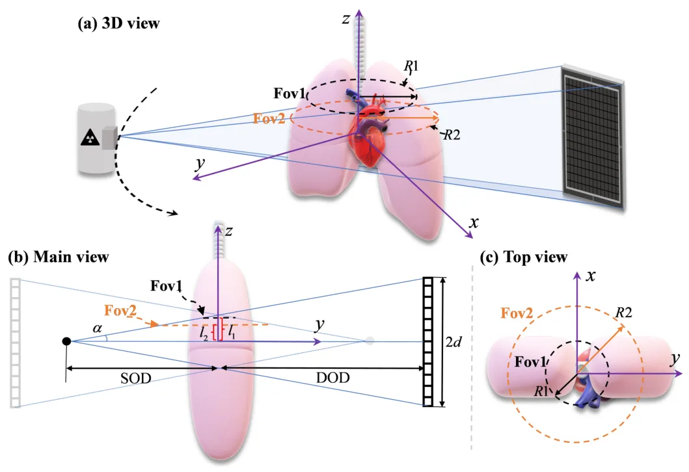
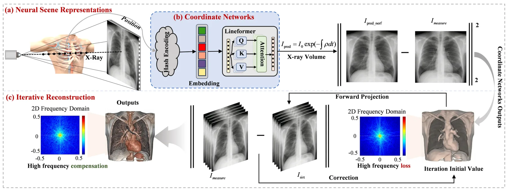
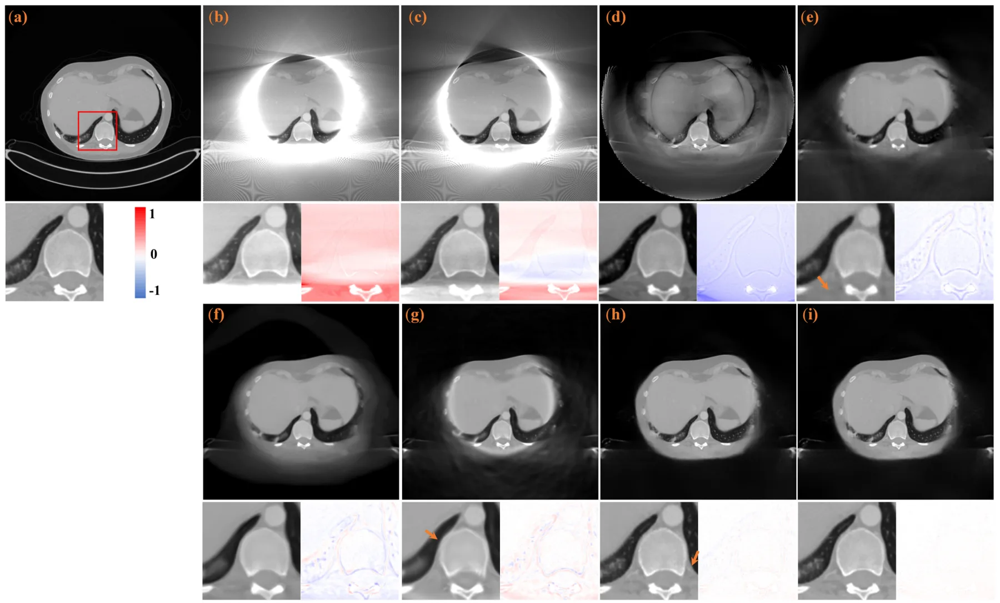
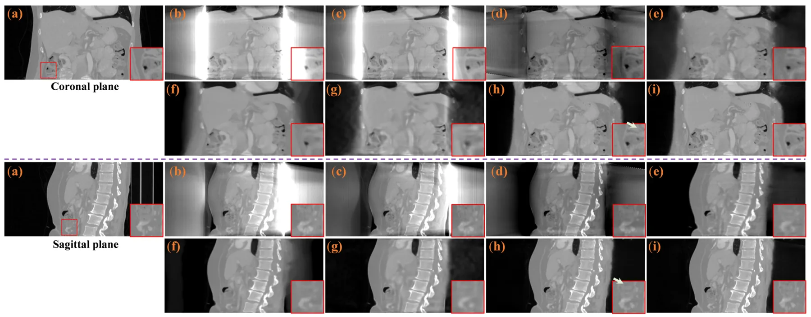
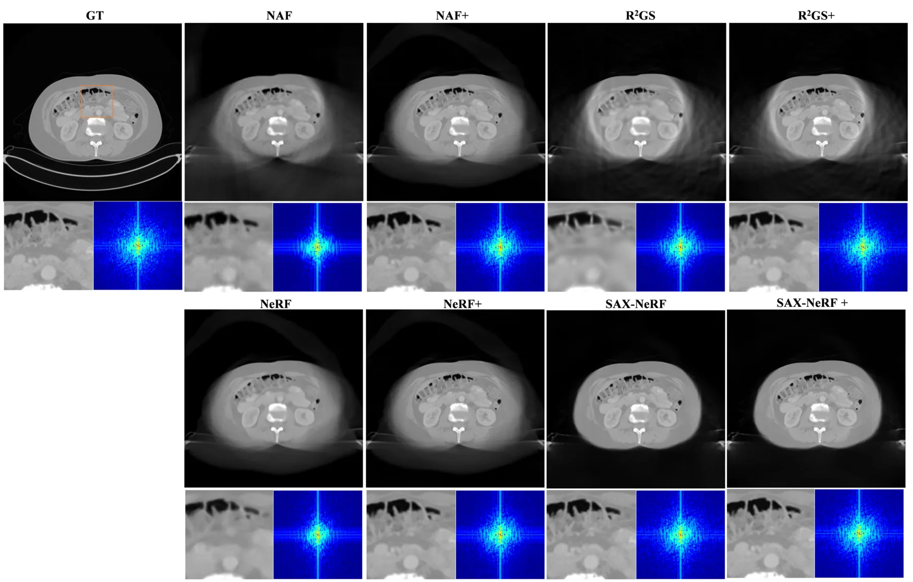
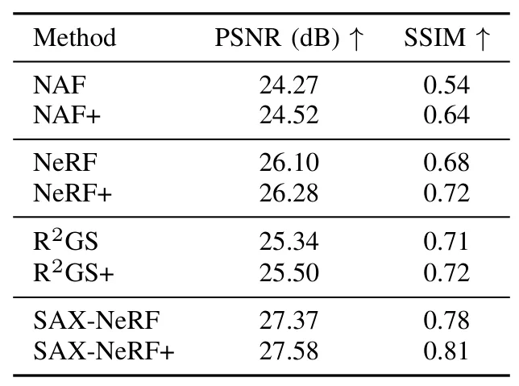
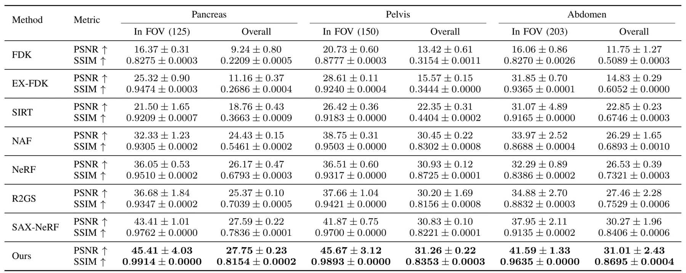

面向锥束 CT 截断重建的纹理保持隐式神经表示Texture-preserving implicit neural representation for Cone beam CT truncated reconstruction
与三维重建和隐式表示相关，但主要面向医学 CT，和机器人 SLAM/GNSS 关系较间接。
一句话工作总结
结合神经场外推和物理迭代细化来抑制 CBCT 截断伪影并保留高频纹理。
摘要
论文针对 CBCT 截断导致的严重伪影和视野受限，提出自监督三维重建框架：先用神经场直接从空间坐标映射到放射密度并接受投影监督，实现连续三维外推和环状伪影抑制；再加入物理迭代 refinement，从原始投影逐步重新注入高频纹理，以缓解坐标网络的频谱偏置。
Cone-beam computed tomography (CBCT) frequently suffers from data truncation, which introduces severe artifacts and limits the effective field of view (FOV). Existing deep learning methods for truncated cone-beam computed tomography (CBCT) reconstruction suffer from serious limitations, including a strict reliance on supervised ground truth and a failure to account for continuous 3D spatial truncation variations. To address these challenges, we introduce a self-supervised 3D reconstruction framework based on neural scene representations. By directly mapping spatial coordinates to radiodensity under projection supervision, our approach inherently bypasses traditional filtering and backprojection operations, thereby fundamentally eliminating truncation-induced ring artifacts while enabling robust continuous 3D data extrapolation. However, coordinate networks are susceptible to an inherent spectral bias, which leads to a severe loss of clinically vital high-frequency textures. To resolve this bottleneck, we further incorporate a physics-based iterative refinement module into the neural scene representation architecture. Leveraging the artifact-free, extrapolated volume from the coordinate network as an optimal initialization, this module progressively re-extracts and injects high-frequency structural information from the original projections back into the volume. Extensive experiments on both simulated and real-world datasets demonstrate that our method successfully unifies the exceptional artifact suppression and extrapolation capabilities of neural networks with the high-fidelity detail preservation of iterative algorithms.
中文解读摘录
图表/页面预览

{kind=link}

{kind=link}

{kind=link}

{kind=link}

{kind=link}

{kind=link}

{kind=link}
